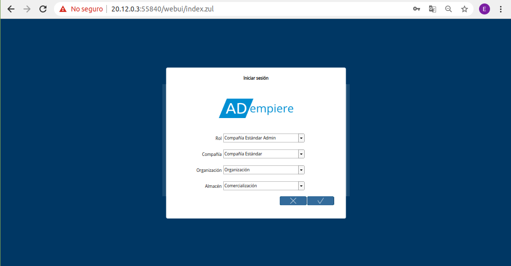
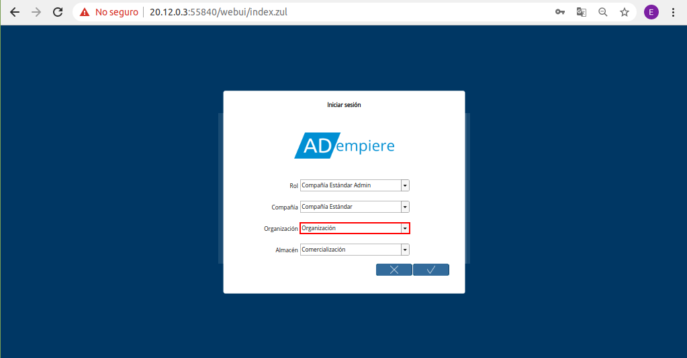
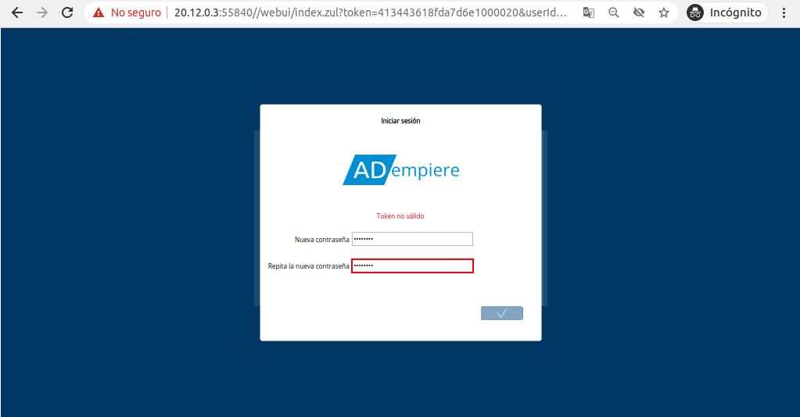

Inicio de Sesión¶
En ADempiere el login es el proceso que permite el acceso de forma segura utilizando la identificación de un usuario único y su contraseña, a continuación se explicará el procedimiento.
Para acceder o iniciar sesión en ADempiere, el usuario requiere lo siguiente:
Servicio de ADempiere (URL del Servicio)
Credenciales de acceso (Facilitadas por un consultor de ERPyA)
Usuario: Estandar
Clave: Estandar
Rol asignado al usuario creado por ERPyA
Al ingresar a la url del servicio de ADempiere facilitada por un consultor de ERPyA, podrá visualizar la ventana “Login” o “Iniciar Sesión”, la cual cuenta con los campos necesarios para iniciar sesión en el idioma que el usuario lo requiera.
Imagen 1. Ventana Login o Iniciar Sesión en ADempiere

Introduzca en el campo “Usuario”, el usuario previamente facilitado por el consultor de ERPyA.
Imagen 2. Usuario

Introduzca en el campo “Contraseña”, la contraseña del usuario previamente facilitada por el consultor de ERPyA.
Imagen 3. Campo Contraseña del Usuario

Seleccione en el campo “Lenguaje”, el idioma con el cual requiere ingresar al servicio de ADempiere.
Imagen 4. Campo Lenguaje para Acceso

De igual manera, la ventana cuenta con el checklist “Recordar mis datos”, que al tildar el mismo serán recordadas las credenciales de acceso del usuario.
Imagen 5. Checklist Recordar mis datos

Seleccione la opción “OK”, para cargar las credenciales de acceso y proceder a detallar el rol, la organización, compañía y almacén para ingresar a ADempiere.
Imagen 6. Opción OK para Cargar las Credenciales

Podrá visualizar la ventana “Login” o “Iniciar Sesión”, con los campos competentes al rol del usuario.

Imagen 7. Ventana Login o Iniciar Sesión en ADempiere con Rol del Usuario
Seleccione en el campo “Rol”, el rol que cumple el usuario dentro de la organización.
Imagen 8. Campo Rol del Usuario

Seleccione en el campo “Compañía”, la compañía para la cual trabaja el usuario.
Imagen 9. Campo Compañía

Seleccione en el campo “Organización”, la organización para la cual trabaja el usuario.

Imagen 10. Campo Organización
Seleccione en el campo “Almacén”, el almacén para el requiere acceder el usuario.
Imagen 11. Campo Almacén

Por último, para iniciar sesión en el servicio de ADempiere, debe seleccionar la opción “OK”.
Imagen 12. Opción OK para acceder a ADempiere

Recuperar Contraseña¶
Si el usuario no recuerda la contraseña para iniciar sesión puede recuperarla seleccionando la interrogante ¿Se te olvidó tu contraseña?.
Imagen 13. Interrogante ¿Se te Olvidó tu Contraseña?

Podrá visualizar la ventana “Login” o “Iniciar Sesión”, con el campo “ID de usuario”, donde debe ingresar el usuario de acceso al servicio de ADempiere.
Imagen 14. Ventana Login o Iniciar Sesión en ADempiere para Recuperar Contraseña

Seleccione la opción “OK”, para que ADempiere envie por correo electrónico, la verificación de usuario y la URL para cambiar la contraseña.
Imagen 15. Opción OK para Recuperar Contraseña

Ubique el nuevo mensaje recibido en su correo electrónico y seleccione la opción “Verify Token”.
Imagen 16. Correo Recibido de ADempiere

Automáticamente se cargará una pestaña en el navegador, con la url indicada en el correo recibido. En dicha pestaña podrá visualizar la ventana “Login” o “Iniciar Sesión” con los campos necesarios para crear una nueva contraseña.
Imagen 17. Pestaña Cargada Automáticamente

Introduzca en el campo “Nueva Contraseña”, la contraseña para iniciar sesión en ADempiere.
Imagen 18. Campo Nueva Contraseña

Introduzca en el campo “Repita la Nueva Contraseña”, la contraseña ingresada en el campo “Nueva Contraseña”, para iniciar sesión en ADempiere.

Imagen 19. Campo Repita la Nueva Contraseña
Seleccione la opción “OK”, para guardar la nueva contraseña ingresada.
Imagen 20. Opción Ok para Guardar la Contraseña